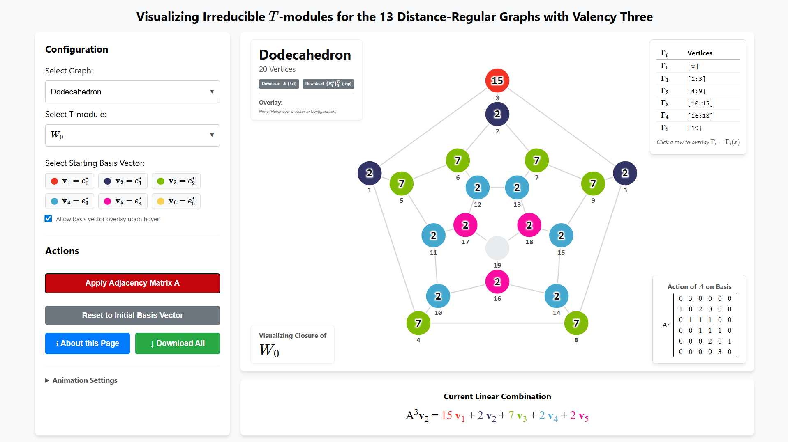
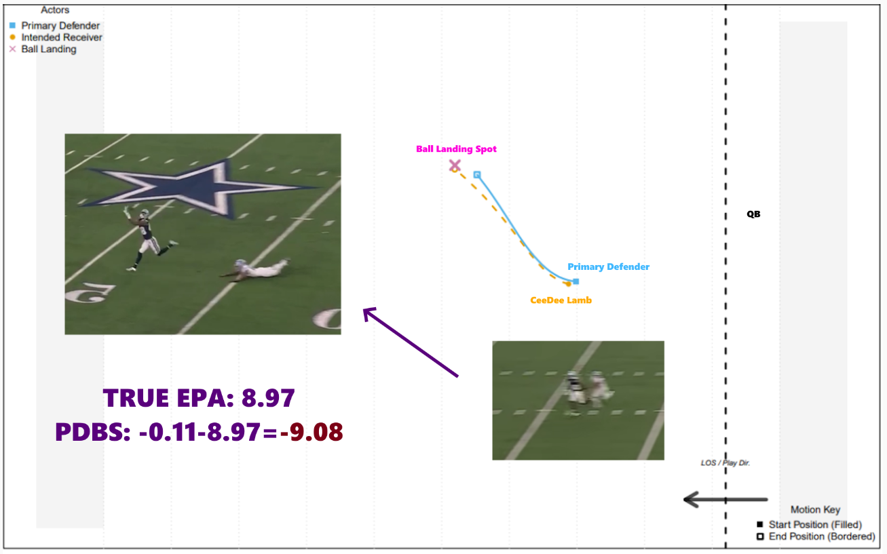
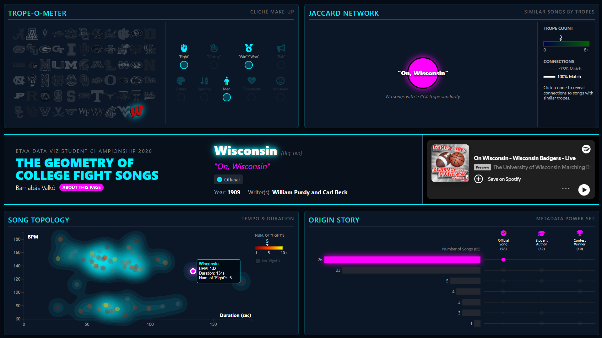
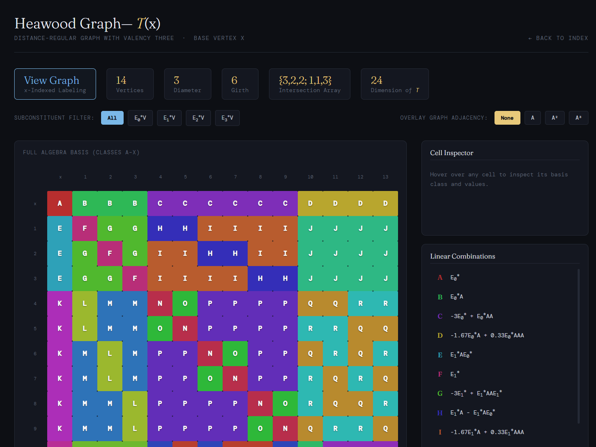

About me
Hello! I am a fourth-year undergraduate at the University of Wisconsin–Madison, pursuing Bachelors of Science in Mathematics and Statistics, as well as certificates in Physics and Educational Policy Studies. My research interests include Algebraic Combinatorics, Graph Theory, and Sports Analytics.
Selected Projects

Irreducible T-Module Visualizer
An interactive visualization of the closure of irreducible T-modules of the 13 distance-regular graphs with valency three, created to accompany the corresponding research paper.

2026 NFL Big Data Bowl: Primary Defender Break Score
Honorable Mention (Top ~5 out of 277 submissions). Created the "Primary Defender Break Score," leveraging a GAM-based predictive EPA model to quantify how many points a primary pass defender saves whilst a pass is in the air.

The Geometry of College Fight Songs
Winner of the UW-Madison campus-wide Bucky's Data Viz Challenge. An interactive visualization of college fight songs, analyzing their tropes and metadata. Represented UW at the BTAA Data Viz Challenge 2026.

Terwilliger Algebra Visualizer
A deep-dive visualization of the Terwilliger algebras of the 13 distance-regular graphs of valency three.